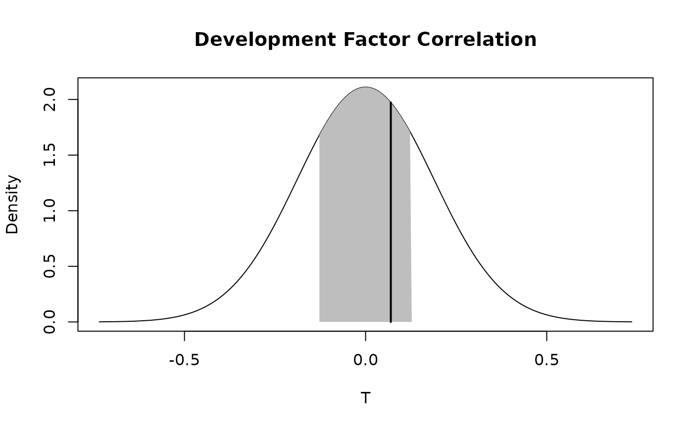

Testing for Correlations between Subsequent Development Factors
dfCorTest.RdOne of the main assumptions underlying the chain ladder method is the uncorrelation of subsequest development factor. The function tests this assumption.
Arguments
- Triangle
cumulative claims triangle. Assume columns are the development period, use transpose otherwise. A (mxn)-matrix \(C_{ik}\) which is filled for \(k \leq n+1-i; i=1,\ldots,m; m\geq n \), see
qpaidfor how to use (mxn)-development triangles with m<n, say higher development period frequency (e.g quarterly) than origin period frequency (e.g accident years).- ci
confidence interval. Default: .5. A confidence interval is a type of interval estimate, computed from the statis tics of the observed data, that might contain the true value of an unknown population parameter. The interval has an associated confidence level that quantifies the level of confidence that the parameter lies in the interval.
Details
As described by the Mack's 1994 paper a procedure is designed to test for calendar year influences.
The usual test for uncorrelatedness requires that we have identically distributed pairs of observations which come from a Normal distribution. Both conditions are usually not fulfilled for adjacent columns of development factors. Spearman's correlation coefficient is therefore used.
The metric calulated by the procudeure described return a statistic \(T\) that it is assumed to be Normally Distributed. It is therefore possible to define a confidence interval threshold in order to evaluate the outcome of the test.
Value
dfCorTest returns a list with the following elements
- T_stat
summary statistic
- Var
variance of the resulting distribution
- Range
vector of the range corresponding the confidence interval threshold selected
- ci
confidence interval
References
Mack, T., Measuring the Variability of Chain Ladder Reserve Estimates, Casualty Actuarial Society Forum, Spring 1994
Author
Marco De Virgilis devirgilis.marco@gmail.com
Note
Additional references for further reading:
Thomas Mack. Distribution-free calculation of the standard error of chain ladder reserve estimates. Astin Bulletin. Vol. 23. No 2. 1993. pp.213:225
Thomas Mack. The standard error of chain ladder reserve estimates: Recursive calculation and inclusion of a tail factor. Astin Bulletin. Vol. 29. No 2. 1999. pp.361:366
Venter, G.G., Testing the Assumptions of Age-to-Age Factors, Proceedings of the Casualty Actuarial Society LXXXV, 1998, pp. 807-847
See also
See also qpaid for dealing with non-square triangles,
cyEffTest for the test for calendar year effect,
chainladder for the chain-ladder method,
summary.dfCorTest,
plot.dfCorTest
Examples
# Before actually applying the Chain Ladder technique it is necessary to check
# whether the Development Factors are correlated
# Apply the function to the triangle and save the output into the variable test
test <- dfCorTest(RAA)
# Plot the confidence interval and the test metric
plot(test)

# The metric is within the confidence interval, therefore the Development Factors are nor correlated
# Print the summary table
summary(test)
#> $Results
#> Value
#> T 0.06955782
#> E[T] 0.00000000
#> Var[T] 0.03571429
#>
#> $Range
#> Value
#> Lower -0.1274666
#> Upper 0.1274666
#>
# Print only the main outcomes
print(test)
#> Development Factor Correlation
#>
#> T = 0.06955782
#>
#> 50%-Range = ( -0.1274666 ; 0.1274666 )
#>
#> Development Factor Correlation: FALSE
# The test has returned a negative outcome. This means that the triangle is
# not affected by Development Factor Correlation and therefore the chain ladder method
# can be applied.